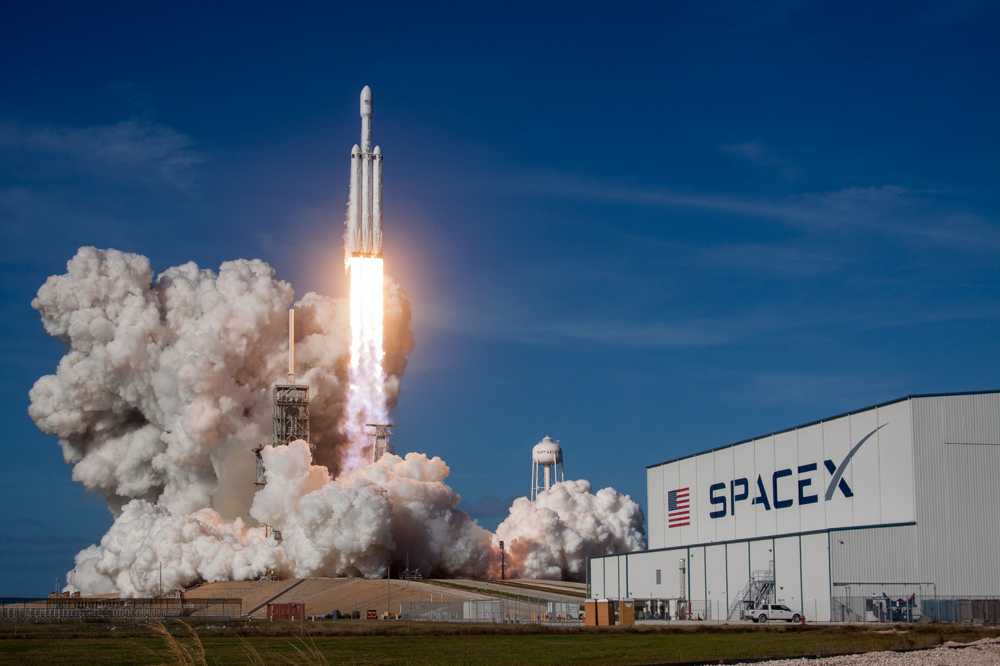

SPACEX
ditulis oleh Muhammad Rafly Alfarizi. Pada 8 November 2022.
Space Exploration Technologies Corporation (SpaceX) adalah perusahaan transportasi luar angkasa swasta Amerika Serikat yang didirikan oleh Elon Musk. Perusahaan ini telah mengembangkan keluarga roket Falcon dengan tujuan menjadi kendaraan peluncuran yang dapat dipakai ulang. SpaceX juga mengembangkan wahana antariksa SpaceX Dragon untuk mengirim suplai dan pergantian awak Stasiun Luar Angkasa Internasional.
Perusahaan ini didirikan pada tanggal 6 Mei 2002 oleh seorang pengusaha bernama Elon Musk. Awalnya perusahaan ini berbasis di El Segundo, SpaceX kini beroperasi di Hawthorne, California.
Beberapa pencapaian yang diraih SpaceX yaitu Roket swasta berbahan bakar cair pertama yang mencapai orbit (roket Falcon 1 tahun 2008), perusahaan swasta pertama yang meluncurkan wahana antariksa menuju orbit, dan mendaratkannya kembali (Dragon tahun 2010), perusahaan swasta pertama yang mengirim wahana antariksa menuju Stasiun Luar Angkasa Internasional (Dragon tahun 2012), mendaratkan roket kelas orbital dengan metode "propulsive landing" untuk pertama kalinya (Falcon 9 tahun 2015), peluncuran kembali roket kelas orbital untuk pertama kalinya (Falcon 9 tahun 2017), perusahaan pertama yang mengirim sebuah objek menuju orbit matahari (Tes peluncuran roket Falcon Heavy yang membawa sebuah mobil Tesla Roadster tahun 2018), dan perusahaan swasta pertama untuk mengirim astronot ke orbit dan ke Stasiun Luar Angkasa Internasional (misi SpaceX Crew Dragon Demo-2 dan SpaceX Crew-1 pada tahun 2020). Sampai 6 Desember 2020, SpaceX telah mengirim 21 misi suplai ke Stasiun Luar Angkasa Internasional di bawah kontrak dengan NASA. SpaceX juga telah menandatangani kontrak dengan NASA untuk melakukan pergantian awak Stasiun Luar Angkasa Internasional yang akan dilakukan mulai tahun 2019.
Sejarah
Pendirian
Pada tahun 2001, Elon Musk membuat konsep Mars Oasis, sebuah proyek untuk mendaratkan miniatur rumah kaca eksperimental dan menanam tanaman di Mars. Dia mengumumkan bahwa proyek tersebut akan menjadi perjalanan "terjauh yang pernah dijalani oleh kehidupan manapun" dalam upaya untuk mendapatkan kembali minat publik dalam eksplorasi ruang angkasa dan meningkatkan anggaran NASA. Musk mencoba membeli roket murah dari Rusia tetapi kembali dengan tangan kosong setelah gagal menemukan roket dengan harga yang terjangkau.
Dalam penerbangan pulang, Musk menyadari bahwa dia dapat memulai perusahaan yang dapat membuat roket terjangkau yang dia butuhkan. Menurut investor awal Tesla dan SpaceX, Steve Jurvetson, Musk menghitung bahwa biaya bahan mentah untuk membuat roket hanya 3% dari harga jual roket pada saat itu. Dengan menerapkan integrasi vertikal, memproduksi sekitar 85% perangkat keras peluncuran di perusahaannya sendiri, dan pendekatan modular rekayasa perangkat lunak modern, Musk yakin SpaceX dapat memotong harga peluncuran hingga sepuluh kali lebih murah dan masih menikmati margin kotor sebesar 70%.
Falcon 1 dan peluncuran orbital pertama
SpaceX mengembangkan kendaraan peluncuran orbital pertamanya, Falcon 1, dengan pendanaan swasta.[14][15] Falcon 1 adalah kendaraan peluncuran kecil dua tingkat ke orbit sekali pakai. Total biaya pengembangan Falcon 1 sekitar US$90 juta.
Pada tahun 2005, SpaceX mengumumkan rencana untuk mengejar program luar angkasa komersial yang dinilai manusia hingga akhir dekade ini, sebuah program yang nantinya akan menjadi wahana antariksa Dragon.[16] Pada tahun 2006, NASA mengumumkan bahwa perusahaan tersebut adalah salah satu dari dua perusahaan yang dipilih untuk memberikan kontrak demonstrasi pasokan kembali awak dan kargo kepada ISS di bawah program COTS.